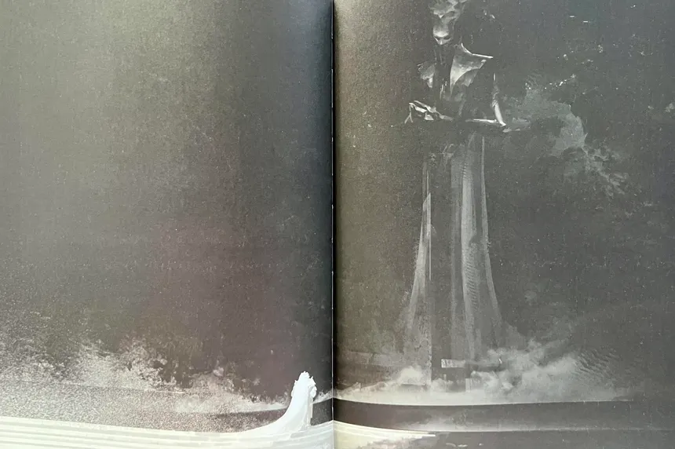

The Light and Dark Saga
The Light and Dark Saga was the first 'saga' of Destiny, crossing between both games, and lasting 10 years. It revolved around a character named the witness, a nearly all powerful being controlling darkness itself, posing a huge threat to the universe and the traveler.

Here is a summary of the story:
The Light and Dark saga in Destiny 2 centers on humanity’s long struggle for survival in a universe shaped by two opposing cosmic forces: the Light, which represents growth, hope, and complexity, and the Darkness, which values simplicity, inevitability, and survival through dominance. Guardians, resurrected warriors empowered by the Light through the Traveler, defend humanity from alien threats like the Hive, Fallen, Cabal, and Vex. Over time, the story reveals that the conflict is not just about good versus evil, but about different philosophies of existence. As the Darkness begins to return to the solar system, Guardians are forced to question their absolute reliance on the Light and confront uncomfortable truths about the Traveler’s silence and past choices.
The saga reaches its climax with the emergence of the Witness, a being that embodies the Darkness’s ideology and seeks to impose a final, unchanging order on the universe by ending all conflict and chaos. Throughout expansions like Beyond Light, The Witch Queen, Lightfall, and The Final Shape, Guardians learn to wield both Light and Darkness, proving that balance and choice define humanity’s strength. Ultimately, the Light and Dark saga is about free will: the idea that life’s value comes from struggle, change, and diversity, rather than a perfectly ordered end. By confronting the Witness and defending that principle, Guardians fight not just to survive, but to preserve the right of the universe to keep becoming something new.
It also released various expansions, such as: Forsaken, Shadowkeep, Lightfall, Final Shape, Beyond Light, and Witch Queen. Every expansion before Edge of Fate was part of this saga.
Back Home